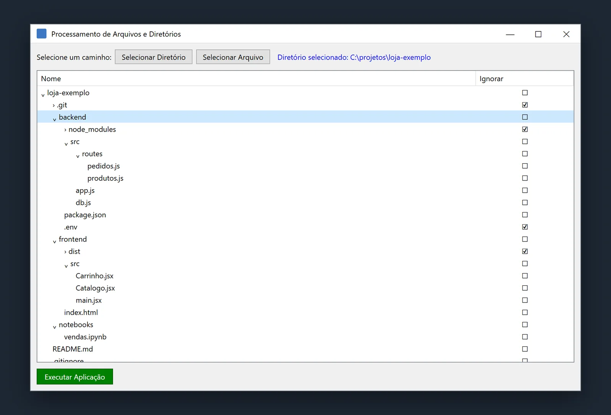

PortfólioAplicativos, jogos e automação
Vibe Coding Toolkit
Programa de computador que recebe uma pasta de projeto e gera dois arquivos: a árvore de pastas e o conteúdo de todos os arquivos. Os dois servem de contexto completo para um chat com IA. Respeita o .gitignore e limpa notebooks Jupyter.
- Tipo
- Ferramenta própria, versão pública no GitHub
- Interface
- tkinter
- Saída
- NomeArquitetura.bash e NomeConteudo.txt
- Arquivos do projeto
- Somente leitura
2arquivos gerados por pasta
3repositórios: AiAmmo, Vibe-Coding-Toolkit e vibe-toolkit
5versões do toolkit, de março a novembro de 2025
Tela
Tela reproduzida a partir do código da interface (mesmos textos e disposição).


Processo
Escolha
Selecionar Diretórioprojeto inteiro
Selecionar Arquivoum arquivo só
Árvore
Marcar o que ignorarpasta marcada leva os filhos junto
Perguntas
Remover __pycache__?se houver
Usar o .gitignore?se houver
Geração
Arquitetura.bashárvore com ├─ e └─
Conteudo.txtcaminho e conteúdo de cada arquivo, separados por linha de /
Limpeza
Notebooks .ipynbmantém células e saída de texto
Imagens em base64trocadas por uma descrição curta
Saída
loja-exemplo/ ├─ backend/ │ ├─ src/ │ │ ├─ routes/ │ │ │ ├─ pedidos.js │ │ │ └─ produtos.js │ │ ├─ app.js │ │ └─ db.js │ └─ package.json ├─ frontend/ │ ├─ src/ │ │ ├─ Carrinho.jsx │ │ ├─ Catalogo.jsx │ │ └─ main.jsx │ └─ index.html ├─ notebooks/ │ └─ vendas.ipynb ├─ .gitignore └─ README.md
Árvore gerada para o projeto da tela. As pastas marcadas não aparecem. Dados fictícios.
- Contexto inteiroOs dois arquivos vão juntos para o chat. A IA vê a estrutura e o código de uma vez.
- Nada é alteradoO programa só lê o projeto e grava os 2 arquivos novos.
- Notebook limpoSaídas em imagem e blocos de metadados saem, para caber no limite do chat.
- Arquivo únicoTambém extrai o conteúdo de um arquivo só, sem a árvore.
Versões
fev. 2025
AiAmmo
6 scripts: árvore e conteúdo, remoção de imagem em base64 e a primeira interface com a coluna Ignorar.
mar. 2025
Vibe-Coding-Toolkit
Versão 1, pública no GitHub, com README e instruções de uso.
mai. a nov. 2025
vibe-toolkit
Versões 2 a 5: leitura do .gitignore, remoção de __pycache__ e limpeza de notebooks.
Tecnologias
Pythontkinterfnmatchjson